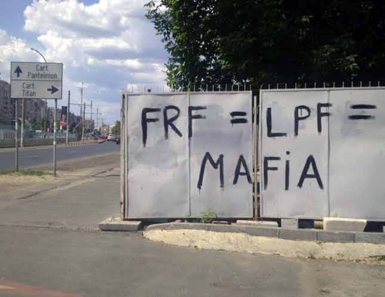

Prima echipă românească învingătoare pe un teren de fotbal britanic e patronată de un individ numit Árpád Pászkány şi antrenată de Paulo Sérgio Bento Brito. Căpitanul răspunde la numele de Cadú, dar în actul de identitate scrie Ricardo Manuel Ferreira Sousa.
Prima echipă românească învingătoare pe un teren de fotbal britanic e patronată de un individ numit Árpád Pászkány şi antrenată de Paulo Sérgio Bento Brito. Căpitanul răspunde la numele de Cadú, dar în actul de identitate scrie Ricardo Manuel Ferreira Sousa.
Unica echipă din România care a bătut Manchester United are un singur român printre titularii de drept, atunci când nimeni nu-i accidentat. Pe român îl cheamă László Sepsi.
În această ediţie a Ligii Campionilor, golurile campioanei României au fost marcate de Rafael Bastos, Rui Pedro Couto Ramalho, Pantelis Kapetanos, Pape Amodou Sougou şi Luís Alberto Santos dos Santos.
Un moment de glorie pentru istoria fotbalului românesc, magistral condus de Mitică Dragomir (LPF) şi Mircea Sandu (FRF). CFR Cluj, românii de la Ligă şi Federaţie se mândresc deja cu performanţa ta!
Meritul real al românilor
Adevărul e că diriguitorii fotbalului autohton au un merit în prestaţia excepţională a echipei din Cluj. Meritul e că i-au lăsat pe maghiari şi portughezi să-şi facă treaba şi nu i-au obstrucţionat îndeajuns încât să-i oblige să plece. Acum, e timpul să se bată cu pumnii patriotici în piept, căci avem dovada că fotbalul neaoş e pe mâini bune: victoria CFR-ului cu 1-0 pe stadionul Old Trafford din Manchester şi cele 10 puncte strânse de românii noştri în competiţia europeană.



{kind=link}
Paradox: românii sunt rasişti, şi cu toate astea cel mai mare comandant militar al nostru a fost jumătate-grecul Mihai Viteazul, cel mai bun administrator a fost neamţul Carol I, organizatorul învăţământului modern a fost grecul Spiru Haret…
Şi în privinţa asta semănăm cu “fraţii latini care mănâncă multe croissante”.
~Nautilus
Avem şi exemple mai recente:
- marii industriaşi români au fost grecul Malaxa şi evreul Auschnitt;
- cel mai respectat medic din România e un palestinian născut în Siria. Se numeşte Raed Arafat şi e singurul doctor în sprijinul căruia nişte românaşi au strigat în stradă. Totuşi, aceiaşi contemporani văd o tragedie în plecarea medicilor români în străinătate ;
;
- singurul scriitor român distins cu premiul Nobel e nemţoaica Herta Müller. Desigur, Eminescu a fost otrăvit cu stripsuri şi n-a apucat să concureze;
- cea mai prolifică perioadă din istoria ţării e cea în care am fost conduşi de dinastia germană Hohenzollern-Sigmaringen;
- cei mai civilizaţi politicieni români sunt ungurii de la Uniunea Democrată Maghiară din România (UDMR) ;
- singura marcă românească cunoscută la nivel mondial e Dacia, graţie francezilor de la Renault;
- problema celei mai notorii gimnaste am rezolvat-o. Pe Nadia Comăneci n-o chema Anna Kemenes!
Avem argumente istorice suficiente pentru a fi naţionalişti, chiar şovini. Afară, afară cu străinii din ţară! Vadim, Gigi, Crin, se aude?
@Acru Să nu exagerăm cu Nadia,doar nu simpatizăm cu ei nu? Link
“Grecul” Mihai Viteazu era de fapt aroman, caci “greci” erau toti care veneau din grecia in acea perioada, vlahi sau nu. Acum sper ca sunteti de acord ca aromanii sunt de fapt romani. Emanuil Gojdu, Nicolae Iorga, Caragiale, sunt considerati cand greci, cand “aromani”. – Iancu de Hunedoara. Cand ungur, cand roman. Multe nume se pot traduce, iar in ardeal se face frecvent, in functie de interesul persoanei inr-o anumita epoca. Si nu uitati, candva, romanii au fost considerati o natie in care era o mandrie sa te nasti, astfel incat cautai sa fii adoptat: Zelea Codreanu era polonezo-german dupa originile parintilor Zielinski si Brunner; Mihai Eminescu si-a romanizat numele, bulgarii revolutionari cautau si primeau adapost in Romania inainte de 1877 cand si-au castigat si ei independenta.
– Iancu de Hunedoara. Cand ungur, cand roman. Multe nume se pot traduce, iar in ardeal se face frecvent, in functie de interesul persoanei inr-o anumita epoca. Si nu uitati, candva, romanii au fost considerati o natie in care era o mandrie sa te nasti, astfel incat cautai sa fii adoptat: Zelea Codreanu era polonezo-german dupa originile parintilor Zielinski si Brunner; Mihai Eminescu si-a romanizat numele, bulgarii revolutionari cautau si primeau adapost in Romania inainte de 1877 cand si-au castigat si ei independenta.
Inafara de Gigi Becali exista si alti romani sau aromani cunoscuti, importanti si cu care chiar sa ne putem mandri. Moscopole, a fost cel mai mare centru cultural si ecomic al balcaniului – pana sa-l distruga turcii – si era un oras aroman. Era sa uit: Neagu Djuvara, aroman si el. Bunicii si mama mea: aromani si ei
Nu e cazul sa dezvoltam un complex de inferioritate ca romani. Sigur ca uitandu-ne la televizor, cunoscand “romanii si romania ” prin intermediul televiziunilor ne poate apuca depresia. Eu am ales sa ignor televiziunile si romania troglodita si ma simt foarte bine in turnul meu de fildes.
Pentru fiecare exemplu se poate cauta un contraexemplu si invers.
@Ionut(4), alegând să ignori “România troglodită” adânceşti falia dintre mahalaua românească (90%) şi micuţa Românie progresistă (10%, optimist privind). Consecinţele sunt astea. Iar alegerile făcute de ei te vor vor izbi chiar dacă ai televizorul stins, nu citeşti Cancan şi nici n-ai idee că a apărut Nefiltrat.ro.
@gavozdita(5), de căutat se poate, mai dificil e cu găsitul unui echivalent relevant.
Comments on this entry are closed.